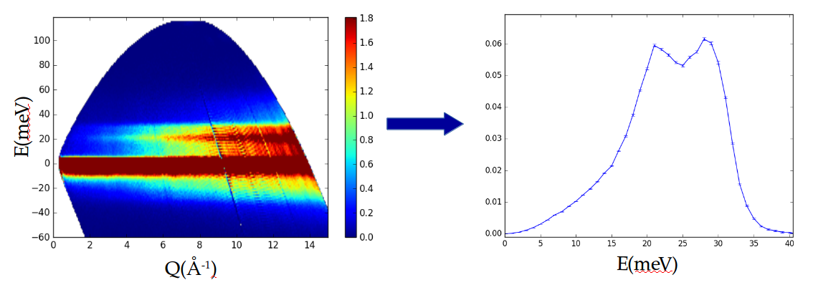

Multiphonon: Phonon Density of States tools for Inelastic Neutron Scattering Powder Data
Repository link »
PDF link »
View review issue »

Published: 29 January 2018
Lin et al., (2018). Multiphonon: Phonon Density of States tools for Inelastic Neutron Scattering Powder Data. Journal of Open Source Software, 3(21), 440. https://doi.org/10.21105/joss.00440
Summary
The multiphonon python package calculates phonon density of states, a reduced representation of vibrational property of condensed matter (see, for example, Section “Density of Normal Modes” in Chapter 23 “Quantum Theory of the Harmonic Crystal” of (Ashcroft and Mermin 2011)), from inelastic neutron scattering (see, for example (B. Fultz et al. 2006–2016)) spectrum from a powder sample. Inelastic neutron spectroscopy (INS) is a probe of excitations in solids of vibrational or magnetic origins. In INS, neutrons can lose(gain) energy to(from) the solid in the form of quantized lattice vibrations – phonons. Measuring phonon density of states is usually the first step in determining the phonon properties of a material experimentally. Phonons play a very important role in understanding the physical properties of a solid, including thermal conductivity and electrical conductivity. Hence, INS is an important tool for studying thermoelectric materials (Budai et al. 2014, Li et al. (2015)), where low thermal conductivity and high electirical conductivity are desired. Study of phonon entropy also made important contributions to the research of thermal dynamics and phase stability of materials (B. Fultz 2010, bogdanoff2002phonon, swan2006vibrational).
The algorithm implemented in this package is a self-consistent, iterative procedure that finishes when the measured INS spectrum can be accounted for by the one-phonon scattering, multi-phonon scattering, and multiple scattering from the deduced phonon density of states, under the incoherent approximation (Appendix of (M. Kresch et al. 2007) and Section 6.5 ``Calculation of Multiphonon Scattering’’ of (B. Fultz et al. 2006–2016)).
-
The multiphonon package takes the inelastic neutron scattering spectrum, shown on the left, and produces the phonon density of states shown on the right.
Notice of Copyright
This manuscript has been authored by UT-Battelle, LLC under Contract No. DE-AC05-00OR22725 with the U.S. Department of Energy. The United States Government retains and the publisher, by accepting the article for publication, acknowledges that the United States Government retains a non-exclusive, paid-up, irrevocable, worldwide license to publish or reproduce the published form of this manuscript, or allow others to do so, for United States Government purposes. The Department of Energy will provide public access to these results of federally sponsored research in accordance with the DOE Public Access Plan (http://energy.gov/downloads/doe-public-access-plan).
Acknowledgements
This work is sponsored by the Laboratory Directed Research and Development Program of Oak Ridge National Laboratory, managed by UT-Battelle LLC, for DOE. Part of this research is supported by the U.S. Department of Energy, Office of Science, Office of Basic Energy Sciences, User Facilities under contract number DE-AC05-00OR22725.
We thank Douglas Abernathy, Jennifer Niedziela, Iyad Al-Qasir, Dipanshu Bansal, and Chen Li for stimulating discussions.
References
Ashcroft, N.W., and N.D. Mermin. 2011. Solid State Physics. Cengage Learning.
Budai, John D, Jiawang Hong, Michael E Manley, Eliot D Specht, Chen W Li, Jonathan Z Tischler, Douglas L Abernathy, et al. 2014. “Metallization of Vanadium Dioxide Driven by Large Phonon Entropy.” Nature 515 (7528). Nature Publishing Group:535. https://doi.org/10.1038/nature13865.
Fultz, Brent. 2010. “Vibrational Thermodynamics of Materials.” Progress in Materials Science 55 (4):247–352. https://doi.org/https://doi.org/10.1016/j.pmatsci.2009.05.002.
Fultz, Brent, Tim Kelly, Jiao Y Y Lin, JaeDong Lee, Olivier Delaire, Max Kresch, Mike McKerns, and Michael Aivazis. 2006–2016. Experimental Inelastic Neutron Scattering with a Chopper Spectrometer. http://www.cacr.caltech.edu/projects/danse/doc/Inelastic_Book.pdf.
Kresch, M., O. Delaire, R. Stevens, J. Y. Y. Lin, and B. Fultz. 2007. “Neutron Scattering Measurements of Phonons in Nickel at Elevated Temperatures.” Phys. Rev. B 75 (10). American Physical Society:104301. https://doi.org/10.1103/PhysRevB.75.104301.
Li, Chen W, Jiawang Hong, Andrew F May, Dipanshu Bansal, Songxue Chi, Tao Hong, Georg Ehlers, and O Delaire. 2015. “Orbitally Driven Giant Phonon Anharmonicity in Snse.” Nature Physics 11 (12). Nature Publishing Group:1063. https://doi.org/10.1038/nphys3492.